On this tab
A properly formatted CSV file can be used to configure numerous devices in one bulk configuration operation. Bulk configuration operations options include assigning and un-assigning devices, pushing profile updates, managing device tags, locking and unlocking devices, deleting devices, rebooting and factory resetting devices, and assigning custom IDs.
To bulk configure devices, click BULK ACTIONS on the Devices page.
If you need instructions on how to prepare a CSV file for any bulk device operation, select one of the options displayed within the Bulk actions screen and click the Instructions for all bulk actions link displayed on the lower left-hand side, of the screen.
Follow the directions on both the left and right side of the screen for preparing a CSV file with one device ID per row, then upload the CSV file to the portal. Do not include any empty rows within the CSV file as instructed. Click GOT IT to return to the bulk action screen.
Assign or un-assign devices in bulk
When necessary, administrators can lock or unlock up to 10,000 devices in a single CSV bulk lock operation. Available devices display within the Devices screen > DEVICES tab. Unassigned devices available for profile assignment are designated as Unassigned within the STATUS column. To list all devices, regardless of their state, refer to the CLEAR FILTER option at the bottom of the STATUS column drop-down menu.
To assign or un-assign devices in bulk:
-
Select BULK ACTIONS from the bottom of the left-hand navigation menu.
-
Select either ASSIGN DEVICES or UNASSIGN DEVICES depending on your organization’s device assignment requirements.
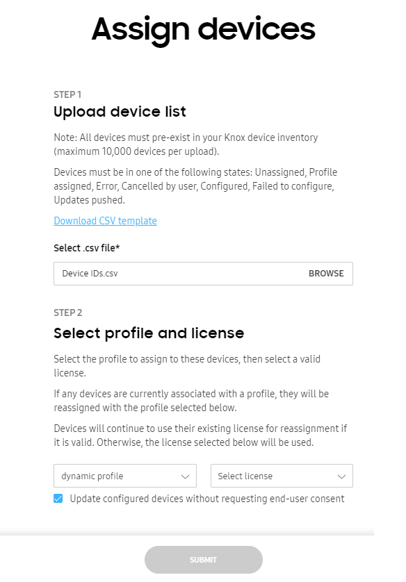
-
Browse for a properly formatted CSV file containing the existing device IDs you intend to assign or un-assign. If needed, select the Download CSV template link to utilize an existing template for easier creation and submission of the CSV file.
-
If assigning devices, select both the profile and license the assigned devices will use with Knox Configure. Optionally, select Update configured devices without requesting end-user consent to assign devices without device user permission. By using this option, the user can still keep using their device while the IT admin makes the change or update. Once the update is made, IT admins can also check the status of the update without having to configure the user interface.
-
Select SUBMIT to upload the file to the console. The change of the device state can be verified within the Devices screen by selecting the DEVICES tab and checking the STATUS column. The STATUS column can be filtered as needed.
Push profile updates in bulk
Admins can bulk update up to 10,000 device configuration profiles using a properly formatted CSV file and significant save time when devices require the same profile update.
To push device profile updates in bulk:
-
Select BULK ACTIONS from the bottom of the left-hand navigation menu.
-
PUSH PROFILE UPDATE.
-
Browse for a properly formatted CSV file containing the IDs of the devices whose profile you intend to update. If needed, select the Download CSV template link to utilize an existing template for easier creation and submission of the CSV file.
-
Within the Select items to push field, select whether Only changed items are updated for device profile pushes, or if a Full profile update is required to update the entire device profile.
-
If you want to force device users to install the update when it is pushed to their devices, select Push update without requesting end user consent. If this option is left unselected, the device user can schedule the update to be installed overnight.
The update notification sent to the device shows the total download size of the update to help the device user make an informed decision about when to apply it.
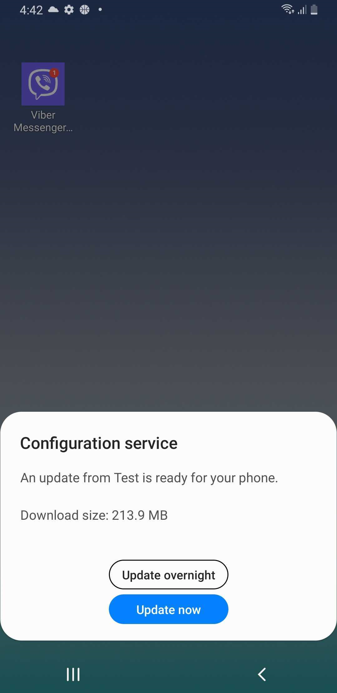
If an update is scheduled for overnight installation, the device attempts to apply the update between 2:00 AM and 5:00 AM according to the current time zone. If the device is in use during that time, it attempts to apply the update the next night during the same period. If the device fails to apply the update overnight for four consecutive days, the device will attempt to apply the update when the device is turned on and a network connection is available the next day.
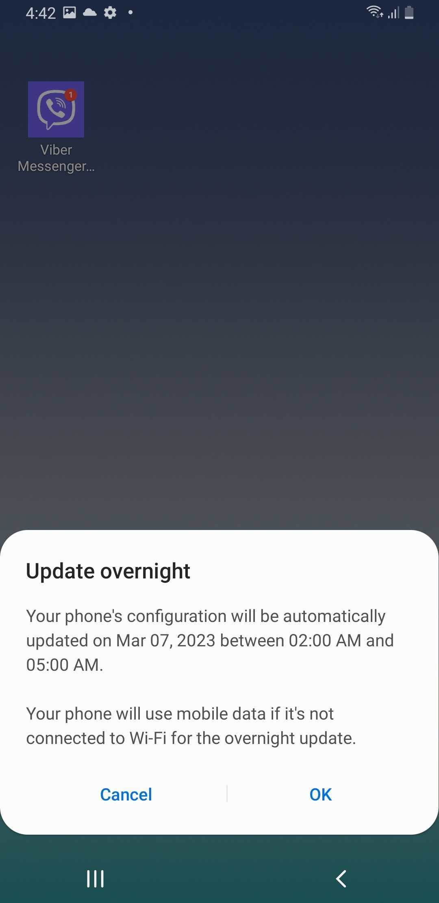
-
Select PUSH NOW to upload the file to the console without delay. Select SCHEDULE to upload the new device profile assignments at an admin determined time. The change of the device state can be verified within the Devices screen by selecting the DEVICES tab and checking the STATUS column. The STATUS column can be filtered as needed.
Delete devices in bulk
Admins can upload a CSV file to delete up to 10,000 devices from Knox Configure administration. If any of the deleted devices are using a Dynamic (Per seat) license, the associated license seats are revoked, and available to assign to other devices.
To delete devices in bulk:
-
Select BULK ACTIONS from the bottom of the left-hand navigation menu.
-
Select DELETE DEVICES.
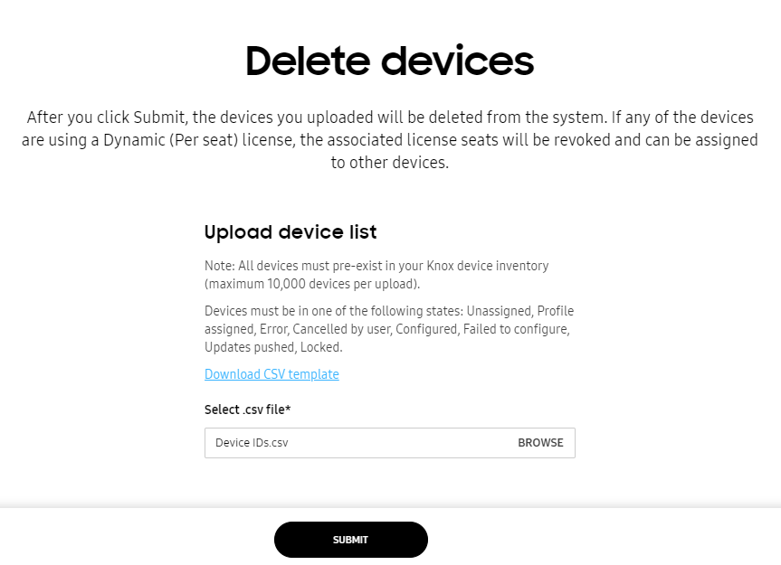
-
Browse for a properly formatted CSV file containing the device IDs you intend to delete from Knox Configure. If needed, select the Download CSV template link to utilize an existing template for easier creation and submission of the CSV file.
-
Select SUBMIT to upload the file to the console. The change of the device state can be verified within the Devices screen by selecting the DEVICES tab and checking the STATUS column. The STATUS column can be filtered as needed.
Manage tags in bulk
Tags can be optionally applied to specific devices to organize and categorize them. Up to 10,000 devices can have their tags bulk managed using a properly formatted CSV file.
Devices must be in an unassigned, profile assigned, error, cancelled by user, configured, failed to configure, updates pushed, or locked state to have tags managed in bulk with a CSV file.
To manage device tags in bulk:
-
Select BULK ACTIONS from the bottom of the left-hand navigation menu.
-
Select MANAGE DEVICE TAGS.
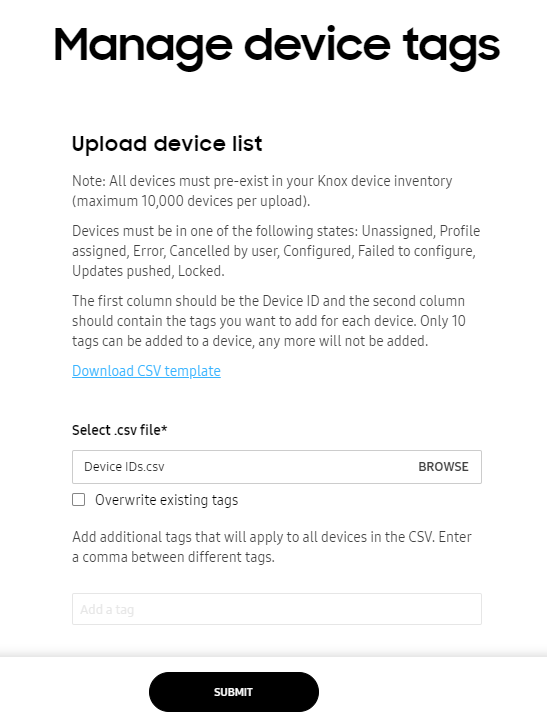
-
Browse for a properly formatted CSV file containing the device IDs whose tags you intend to manage. If needed, select the Download CSV template link to utilize an existing template for easier creation and submission of the CSV file.
-
Configure the CSV file with device IDs in one column and the tags to apply to a listed ID in the second column.
-
Select the Overwrite existing tags option to overwrite existing device tag assignments with the tags in the uploaded CSV file.
-
Select SUBMIT to upload the file to the console. The change of the device state can be verified within the Devices screen by selecting the DEVICES tab and checking the STATUS column. The STATUS column can be filtered as needed.
Reboot or factory reset devices in bulk
Admins can bulk reboot or factory reset up to 10,000 devices using either a Setup or Dynamic edition Knox Configure profile with a CSV file. A reboot push command can be triggered by an admin without the device user’s consent. For information on rebooting or factory resetting individual devices, see Perform device actions.
To reboot or factory reset devices in bulk:
-
Select BULK ACTIONS from the bottom of the left-hand navigation menu.
-
Select REBOOT/FACTORY RESET DEVICES.
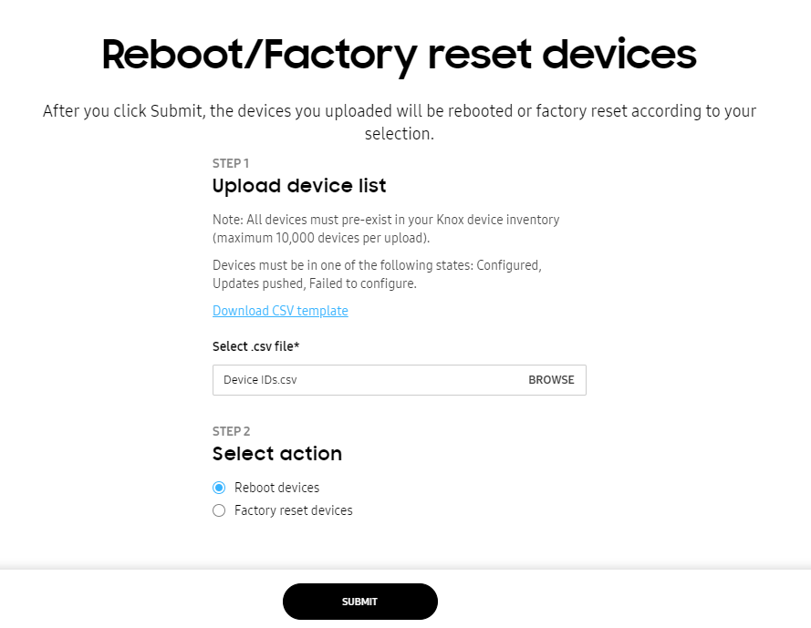
-
Browse for a properly formatted CSV file containing the device IDs you intend to reboot or factory reset. If needed, select the Download CSV template link to utilize an existing template for easier creation and submission of the CSV file.
-
Refer to the Select action field and determine whether this bulk update is intended to Reboot devices or Factory reset devices.
- Reboot devices(s) — The device will be reset and maintain configurations previously set by the IT admin.
- Factory reset device(s) — The device will be reset to factory standard specifications. This means the device will have no restrictions or customization once reset and will need to be configured again.
- Select SUBMIT to upload the file to the console. The change of the device state can be verified within the Devices screen by selecting the DEVICES tab and checking the STATUS column. The STATUS column can be filtered as needed.
Lock or unlock devices in bulk
When necessary, administrators can lock or unlock up to 10,000 devices in a single CSV bulk lock operation. When a device locks, contact information (company name, phone number and Email) displays within the lock screen to assist the device user unlock their device. Additionally, the device’s locked status displays within both the Knox Configure Dashboard and Profiles tab. For information on locking individual devices, see Perform device actions.
To bulk lock or unlock devices in bulk:
-
Select BULK ACTIONS from the bottom of the left-hand navigation menu.
-
Select either LOCK DEVICES or UNLOCK DEVICES depending on your organization’s requirements.
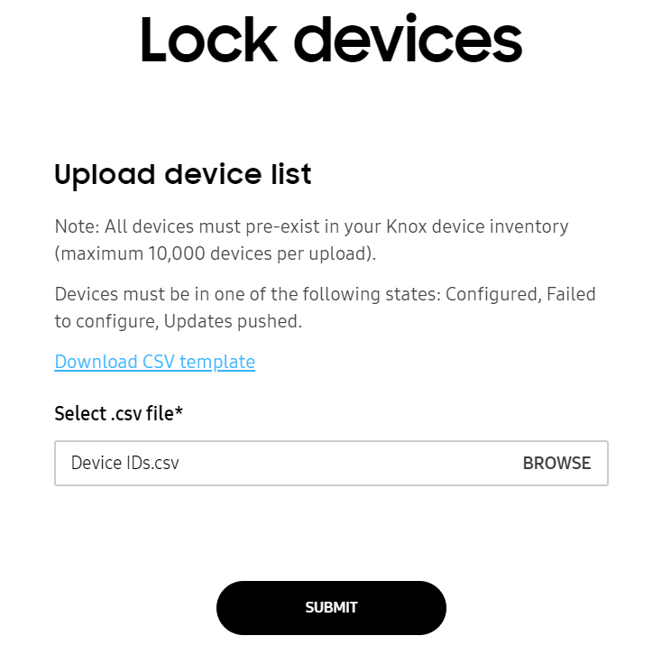
-
Browse for a properly formatted CSV file containing the device IDs you intend to lock or unlock. If needed, select the Download CSV template link to utilize an existing template for easier creation and submission of the CSV file.
-
Select SUBMIT to upload the file to the console. The change of the device state can be verified within the Devices screen by selecting the DEVICES tab and checking the STATUS column. The STATUS column can be filtered as needed.
Map devices to Custom IDs in bulk
A Custom ID is an ID that you create to map to an device IMEI or SN, which are no longer accessible by device apps that are not DO or PO. Company apps deployed through KC can use it to identify the company approved device and allow use only for these devices.
Custom IDs can only be used for devices with Knox version 3.7 and higher.
Custom IDs can be updated easily either individually for a device or in bulk. To see how to update it for a single device, see Device details and logs.
To update Custom IDs in bulk:
-
Select BULK ACTIONS from the bottom of the left-hand navigation menu.
-
Select CUSTOM ID, it is the last item in the screen (you might have to scroll down to see it).
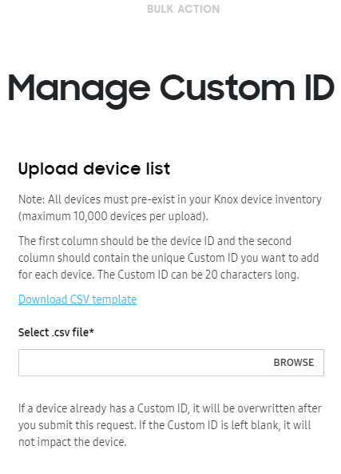
-
Browse for a properly formatted CSV file containing the device IDs in the first column and unique Custom ID in the second. If needed, select the Download CSV template link to utilize an existing template for easier creation and submission of the CSV file.
Custom IDs can’t contain spaces or special characters including the following:
# / $ * % ^ & : \ ( ) + ? { } [ ] < > -
Select SUBMIT to upload the file to the console. The update can be verified within the Devices screen by selecting the DEVICES tab and checking the Device details column in Devices > Device ID. The columns in Devices tab can also be edited to show devices by Custom ID. To do this, click on three dots and check Custom ID. You can also search devices using Custom ID.
This document was updated for the Knox cloud services 26.06 UAT.
On this tab
You can manage and configure multiple devices at the same time using a bulk device action. To perform a bulk action on your devices, go to the Devices page, then click the BULK ACTIONS tab.
Bulk actions include the following:
- How to prepare a CSV file
- Assign devices
- Unassign devices
- Push profile updates
- Manage device tags
- Lock and unlock devices
- Delete devices
- Reboot/Factory reset devices
- Custom ID
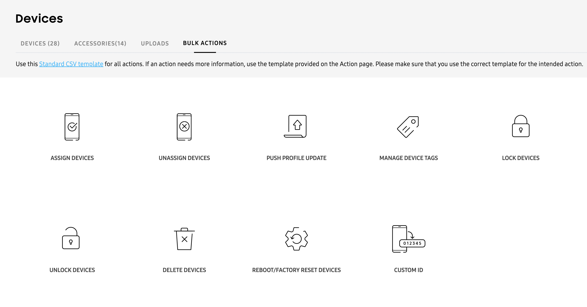
How to prepare a CSV file
A properly formatted CSV file is required to perform device bulk actions. When you click on a specific bulk action, you’ll see an (information) icon near the bottom left corner of the page. Click this icon for instructions on how to prepare a CSV file for your bulk device action.
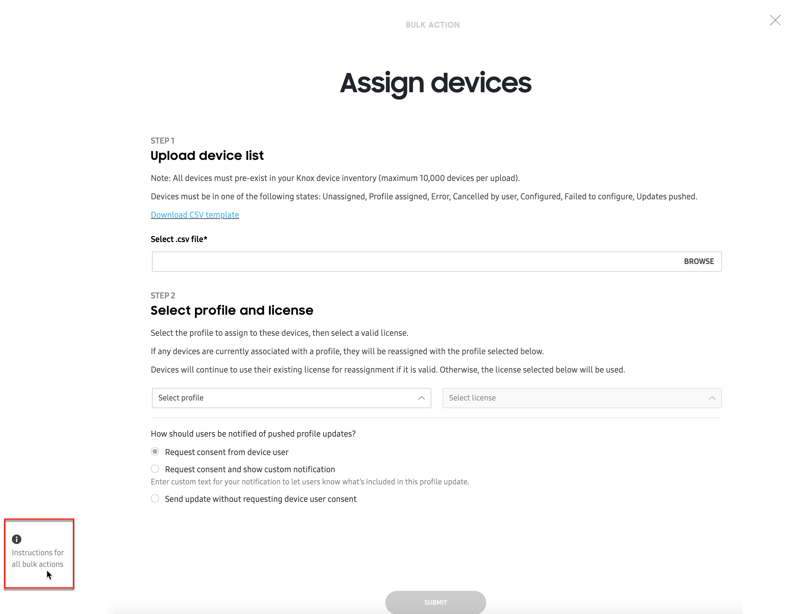
For Knox Configure bulk actions, the CSV file must be in a format containing one IMEI number per line, and not contain any comma characters.
Correct CSV format:
- 310156478946
- 318946543413
- 311489441213
Incorrect CSV format:
- 310156478946,
- 318946543413,
- 311489441213,
This button appears on every bulk action page and provides the same set of instructions, regardless of the selected bulk action.
Assign devices
The ASSIGN DEVICES bulk action lets you assign up to 10,000 devices to a single profile using a CSV file. To do this:
-
From the BULK ACTIONS tab, select ASSIGN DEVICES.
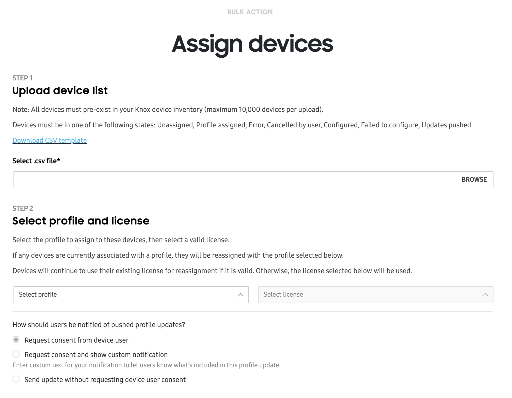
-
Click BROWSE to upload your prepared CSV file containing the device IMEI numbers you want to assign. If needed, click Download CSV template, then fill out the template with your device details.
-
Select the profile and available license you want to associate with these devices.
-
Select how you want to notify your device users of the profile assignment — whether you want to assign the profile silently, or if you want to request consent from the user.
- If you choose to request consent, you can also include a custom notification, as well as a hyperlink to direct users to a website or help page for more information during the enrollment process.
-
Click SUBMIT. Once a device is assigned to a profile, its shows as Configured in the DEVICE tab’s STATUS column
Unassign devices
The UNASSIGN DEVICES bulk action lets you unassign up to 10,000 devices from any of their associated profiles using a CSV file. When a profile is unassigned from the device, the following occurs:
- The device keeps all of its apps and content.
- Uninstalling a Dynamic edition profile from a device revokes the (Dynamic edition) license seat, allowing it to be used again with another device.
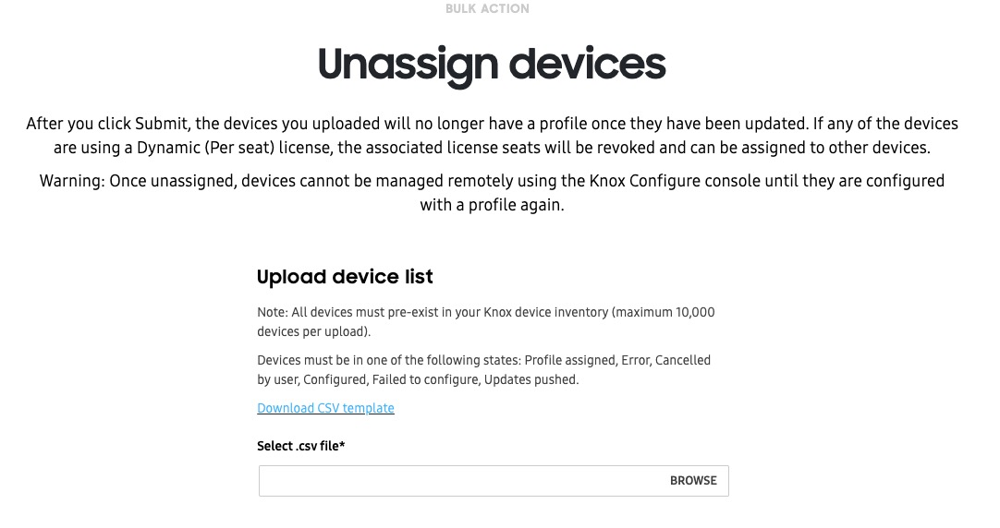
To unassign devices using a bulk action:
-
From the BULK ACTIONS tab, click UNASSIGN DEVICES.
-
Click BROWSE to upload your prepared CSV file containing the device IMEI numbers you want to assign. If needed, click Download CSV template, then fill out the template with your device details.
-
Click SUBMIT to unassign your devices from their respective profiles.
Push profile updates
The PUSH PROFILE UPDATE bulk action lets you push the latest profile configuration for up to 10,000 devices at a time, using a CSV file. This bulk action is particularly useful for when you have multiple updated profiles, and you want to push them to different devices in the fleet. See Defer profile updates to learn how to save your profile changes before using this bulk action.
To push device profile updates in bulk:
-
From the BULK ACTIONS tab, select PUSH PROFILE UPDATE.
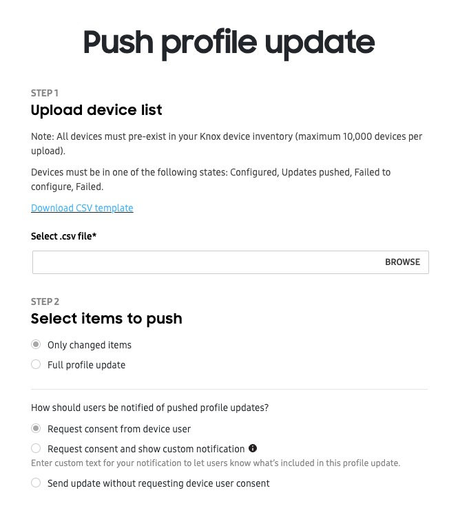
-
Click BROWSE to upload your prepared CSV file containing the device IMEI numbers you want to assign. If needed, click Download CSV template, then fill out the template with your device details.
-
In the Select items to push field, select Only changed items if you only want to push the latest changes since the last update, or Full profile update if you want to push the entire profile to your devices.
-
Select how you want to notify your device users of the profile update — whether you want to update the profile silently, or if you want to request consent from the user.
- If you choose to request consent, you can also include a custom notification, as well as a hyperlink to direct users to a website or help page for more information during the update process.
-
Select PUSH NOW to begin updating your devices immediately, or SCHEDULE to select a date and time for the server to push the update.
Manage device tags
The MANAGE DEVICE TAGS bulk action lets you add unique text labels to help organize devices in your fleet. Using a CSV file, you can add up to 10 unique tags and assign them to up to 10,000 devices at a time.
To manage device tags in bulk:
-
From the BULK ACTIONS tab, select MANAGE DEVICE TAGS.
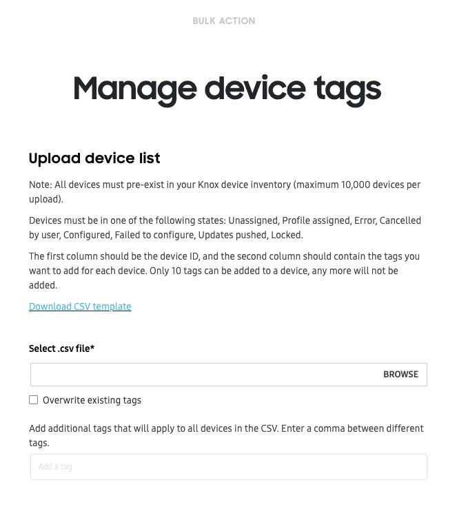
-
Click BROWSE to upload your prepared CSV file containing the device IMEI numbers you want to assign. If needed, click Download CSV template, then fill out the template with your device details. For this bulk action, your CSV file must contain the device IDs in the first column, and the tags in the second column.
-
If you already have tags assigned to devices in your fleet, you can select Overwrite existing tags to replace them with the new tags in the CSV file.
-
In the additional tags field, you can add tags that weren’t included in the CSV file. Note that you can only add up to 10 tags in total.
-
Click SUBMIT to assign the tags to your devices.
Lock and unlock devices
You can lock or unlock up to 10,000 devices at a time using a CSV file. When a device is locked, your company’s contact information is shown on the screen, and the user is unable to perform any task other than entering an unlock code or dialing an emergency number. To learn more about locking devices, see Perform device actions.
To bulk lock or unlock devices in bulk:
-
From the BULK ACTIONS tab, select either LOCK DEVICES or UNLOCK DEVICES.
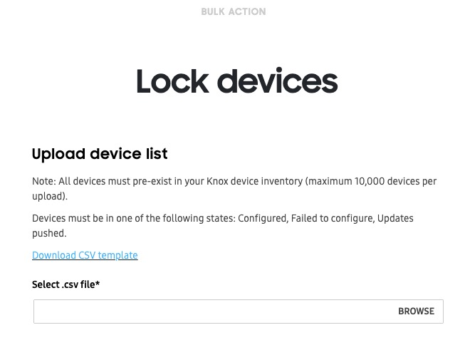
-
Click BROWSE to upload your prepared CSV file containing the device IMEI numbers you want to assign. If needed, click Download CSV template, then fill out the template with your device details.
-
Click SUBMIT to lock or unlock your devices in bulk.
Delete devices
The DELETE DEVICES bulk action lets you delete up to 10,000 devices from the Knox Configure service using a CSV file. To delete your devices using a bulk action:
-
From the BULK ACTIONS tab, select either DELETE DEVICES.
-
Click BROWSE to upload your prepared CSV file containing the device IMEI numbers you want to assign. If needed, click Download CSV template, then fill out the template with your device details.
-
Click SUBMIT to delete your devices from Knox Configure. If any devices are currently using a Dynamic edition license seat, the associated license seats is revoked and made available for assigning to other devices.
Reboot/Factory reset devices
The REBOOT/FACTORY RESET DEVICES bulk action lets you remotely reboot or factory reset up to 10,000 devices using a CSV file. For information on rebooting or factory resetting individual devices, see Perform device actions.
To reboot or factory reset devices in bulk:
-
From the BULK ACTIONS, select REBOOT/FACTORY RESET DEVICES.
-
Click BROWSE to upload your prepared CSV file containing the device IMEI numbers you want to reboot or factory reset. If needed, click Download CSV template, then fill out the template with your device details.
-
Under Select action, choose an option:
- Reboot devices(s) — The devices will shut down and and restart, maintaining its current configuration.
- Factory reset device(s) — The device will be reset to factory settings, removing all of its current configuration settings. Once reset, you’ll have to assign a profile again if you want to apply a configuration.
- Factory reset and eSIM deletion — The device will be reset to factory settings, and the eSIM will be deleted from the device. Once reset, you’ll have to assign a profile again if you want to apply a configuration, and install a new eSIM if you want to make calls or access a mobile data network.
-
Click SUBMIT to perform the reboot or factory reset action.
Custom ID
The CUSTOM ID bulk action lets you add a unique text label to help identify devices in your fleet. Using a CSV file, you can add custom IDs that are up to 50 characters long, and assign them to up to 10,000 devices at a time.
Custom IDs can only be used for devices with Knox version 3.7 and higher.
To add custom IDs in bulk:
-
From the BULK ACTIONS, select CUSTOM ID.
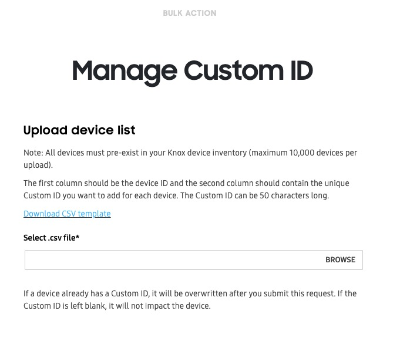
-
Click BROWSE to upload your prepared CSV file containing the device IMEI numbers you want to reboot or factory reset. If needed, click Download CSV template, then fill out the template with your device details. For this bulk action, your CSV file must contain the device IDs in the first column, and the tags in the second column.
Custom IDs can’t contain spaces or special characters including the following:
# / $ * % ^ & : \ ( ) + ? { } [ ] < > -
Click SUBMIT to assign the custom ID to your devices. If a device already has an existing custom ID, it will be overwritten with the new value in the CSV file.
Is this page helpful?
Thank you for your feedback!